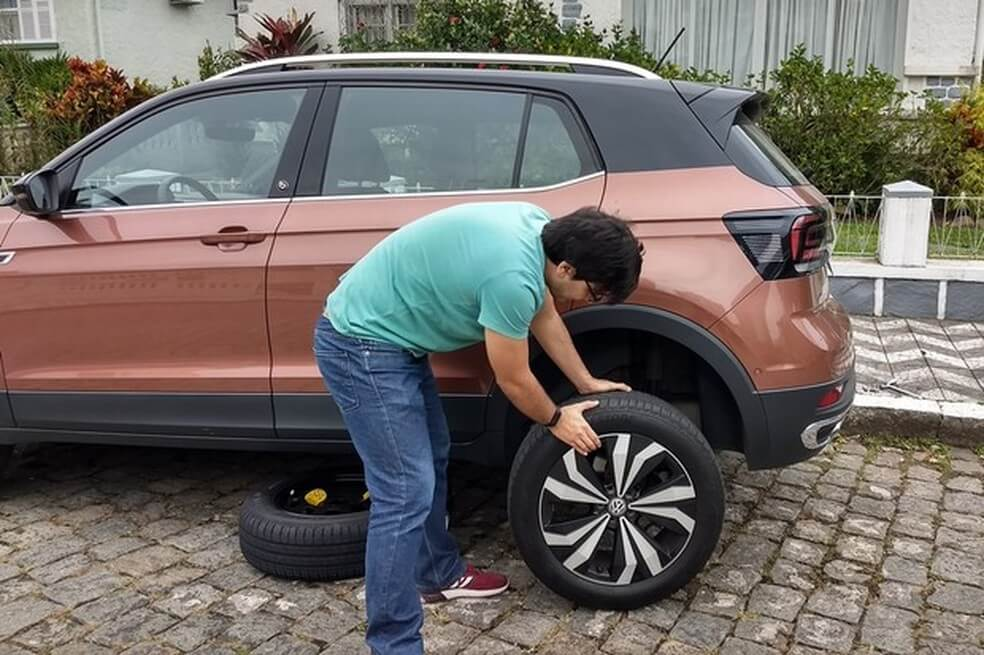

O portal AutoPapo preprarou um vídeo com instruções passo a passo como realizar essa troca, mas explicaremos também por aqui.
O primeiro passo e mais importante é manter a calma. Você tem tempo de tomar ações com segurança
e tranquilidade e isso vai deixar o processo mais tranquilo. Vamos agora falar quais são essas
ações e como executá-las.
1. Pare em local seguro
Seja em uma avenida, rodovia, ou rua, o primeiro passo é sempre que possível procurar um local
menos movimentado para parar. Senão puder, procure um local onde a velocidade da via seja menor,
a via seja livre de curvas e obstruções, para que os outros motoristas possam te ver, e que a
via seja plana. E não se esqueça, pare sempre o mais na borda da via que for possível, e peça
para outros possíveis ocupantes do veículo saírem, caso haja um lugar seguro para ficarem.
(Foto: Rodrigo Ribeiro) — Foto: Auto Esporte
2. Sinalize o local
Ligue seu pisca-alerta e coloque na via o triangulo de sinalização atrás do veículo. Ele deve
ser colocado a uma distância do seu carro proporcional à velocidade da via. Lembre-se que a
presença do triângulo no veículo é obrigatória justamente para ocasiões como essa.
(Foto: Rodrigo Ribeiro) — Foto: Auto Esporte
3. Localize os itens para a troca do pneu
Você irá precisar do estepe, que é o pneu reserva, o macaco e a chave de roda. Localize esses
itens no porta-malas e os prepare para a troca. Na dúvida, consulte o manual do veículo.
(Foto: Rodrigo Ribeiro) — Foto: Auto Esporte
4. Afrouxe os parafusos da roda
Antes de levantar o veículo com o macaco, afrouxe os parafusos da roda a ser trocada. Utilize a
chave de roda para realizar um movimento de alavanca em sentido anti-horário. Caso esteja muito
apertado, tente usar o peso do corpo para fazer os parafusos se soltarem, apoiando com um dos
pés na chave, mas sem pular para evitar acidentes.
(Foto: Allyne Antoni) — Foto: Auto Esporte
5. Posicione e acione o macaco
Posicione o macaco na parte inferior do carro, tomando cuidado para não apoiá-lo nas partes
frágeis e danificá-las. Levante o macaco do chão pensando que o novo pneu estará mais alto que o
atual, então, haverá a necessidade de levantar mais o carro, até que a roda esteja totalmente
fora do chão com alguma folga. Certifique-se que o freio de mão esteja acionado e a primeira
marcha engatada (ou o modo P em carros automáticos).
Uma dica é colocar o estepe embaixo do carro, para evitar impactos caso o macaco se solte.
(Foto: Allyne Antoni) — Foto: Auto Esporte
(Foto: Allyne Antoni) — Foto: Auto Esporte
6. Solte os parafusos e remova o pneu
Termine de soltar os parafusos, coloque-os em um local de fácil acesso e retire o pneu furado. Troque-o de lugar com o estepe, colocando em seu lugar debaixo do carro.

(Foto: Allyne Antoni) — Foto: Auto Esporte
(Foto: Allyne Antoni) — Foto: Auto Esporte
7. Coloque o estepe
Coloque o pneu novo encaixando os furos da roda com os furos do suporte do carro. Essa etapa pode ser mais complicada e exigir procedimentos extras, por isso é bom ler o manual e conhecer seu carro.
(Foto: Allyne Antoni) — Foto: Auto Esporte
8. Aperte os parafusos
Coloque novamente os parafusos, agora na ordem que faça o desenho de uma cruz ou estrela. Isso é pra evitar deformações e estresse no metal da roda. Aperte muito bem os parafusos com a chave de roda.
(Foto: Allyne Antoni) — Foto: Auto Esporte
9. Desça o carro
Remova o pneu furado de baixo do carro e desça completamente o macaco, até se soltar da lataria. Verifique e faça um último aperto nos parafusos e guarde todos os equipamentos no porta-malas, inclusive o triângulo.
(Foto: Allyne Antoni) — Foto: Auto Esporte
(Foto: Allyne Antoni) — Foto: Auto Esporte
Pronto, você já pode continuar andando com seu carro. Não se esqueça de levar o pneu furado até um borracheiro para que o pneu original seja consertado, pois não é recomendado que se use o estepe de forma definitiva no veículo.